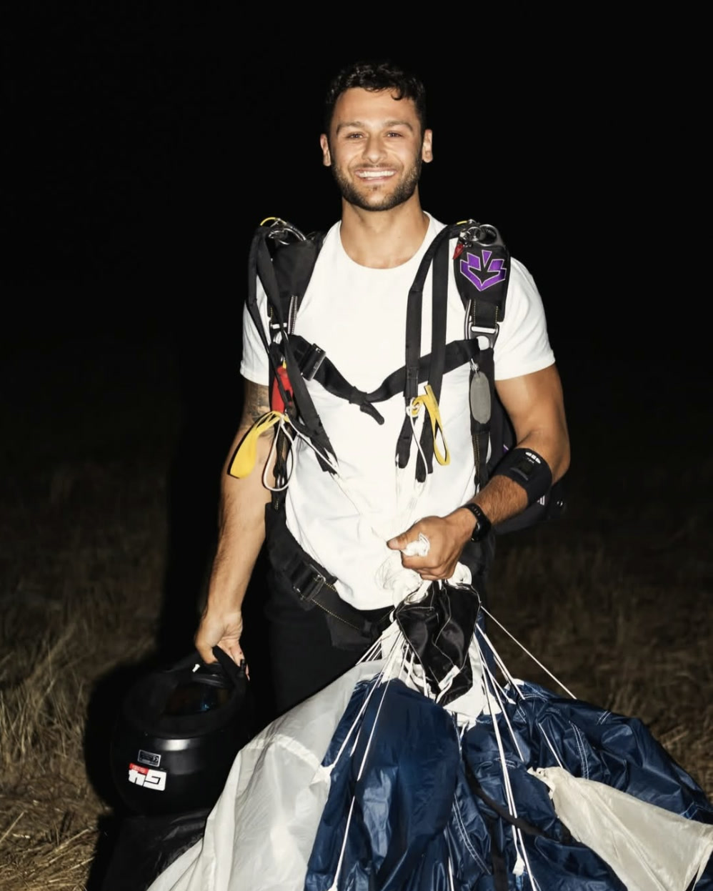

Kyle jumps from planes, helicopters and hot air balloons, and films the whole thing from inside it.
No crew, no chase car, no second unit. The camera goes where he goes, which is the part most brands cannot buy.
See the projectsShot in the air, by him, on DJI and Insta360.

I would rather be inside the shot than behind it.
Long-term partnerships and sponsorships, built around a run of content rather than a single post.
Aerial and action footage shot for your social, your ads or your site. Delivered vertical, horizontal, or both.
Jumps and aerial stunts anywhere in the world, for an event, a product launch or a campaign.
Concept through to delivery on the aerial side. You bring the destination and the budget, I handle everything in the air.
Ongoing representation across a season or a year, with the product in the air on every jump.
Let's make something people stop for.